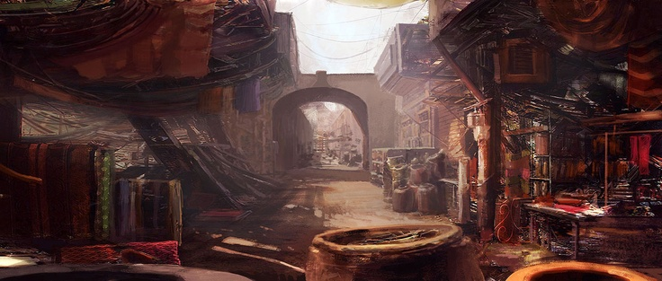

Government
Unitary Parliamentary Constitutional Monarchy - Oak Island is a country of all races and all kinds of life. Lead by Windsor, the benevolent Tortuse monarch of Oak Island for more than 1000 moons, the country is run by a unicamerial legislation that creates all the rules and laws of the land. Windsor acts more as a guardian and advisor to his subjects now as he has grown old. The people of Oak Island adore Windsor more then life itself.
Terrain
Oak Island is large Island country. It has a large stone tower that extends extremely high into the air with farmlands and ports arround it. The tower has many floors but outsiders are only permitted to visit the bottom two. The people of Oak Island inhabit the other floors with some saying the king himself is at the top of the tower.
Many different races come to make Oak Island their home including: mice, moles, squirrels, rats, cats, bats, dogs, rabbits and weasels. Slaves are allowed to be traded but none are allowed to stay on the Island itself.
Areas of Note
Trading District - The trading District of Oak Island is home to goods from all across the known world and from across the ocean as well. Many exoitic goods change hands here daily and often different things can be found from the same vendor in only a weeks time.

Other Regions
Home